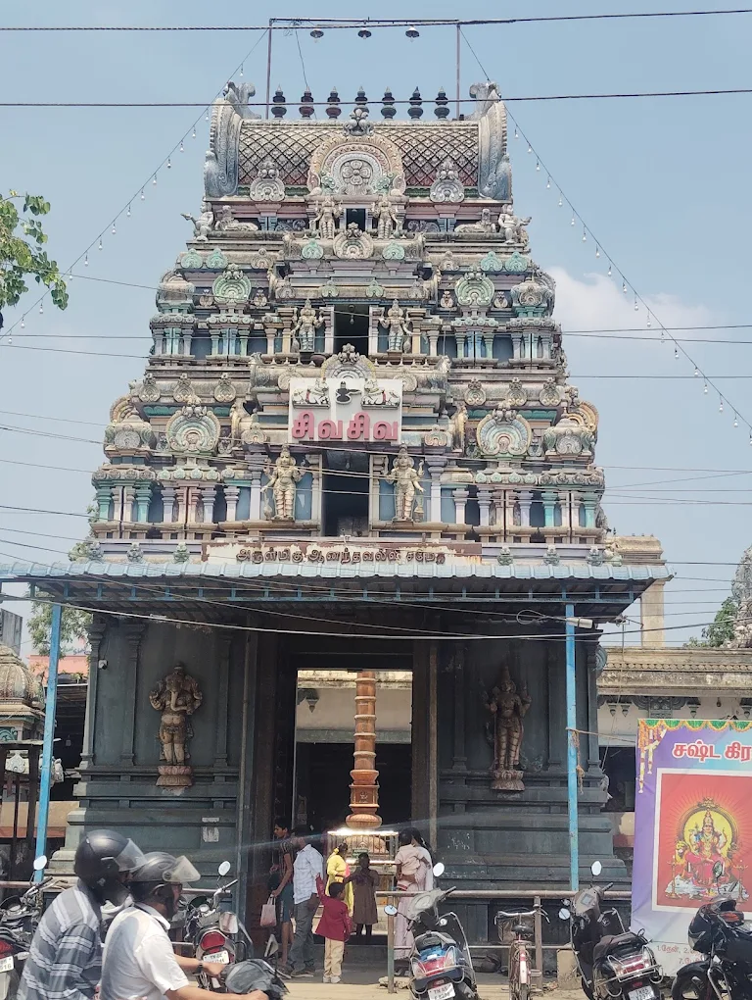

The Sri Agastheeswarar Temple in Anakaputhur is an ancient and spiritually significant shrine dedicated to Lord Shiva, believed to be over 1,000 years old. According to legend, it is one of the many temples established by Sage Agastya to balance the earth's weight during the divine wedding of Shiva and Parvati at Mount Kailash. The temple features a unique round-based Lingam known as the Avudayar and is home to the goddess Anandavalli Thayar, who stands in a separate south-facing shrine. Beyond its connection to Sage Agastya, local lore suggests the Pandavas worshipped here during their exile, and Lord Yama sought penance at this site. Today, the temple remains a peaceful hub for devotees who visit to offer prayers for health, marriage, and prosperity, particularly during major observances like Maha Shivaratri and Pradosham.